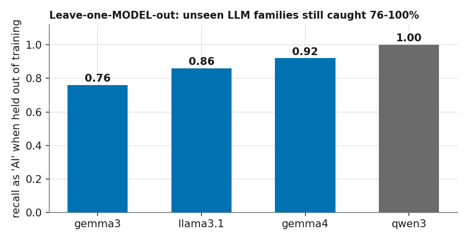
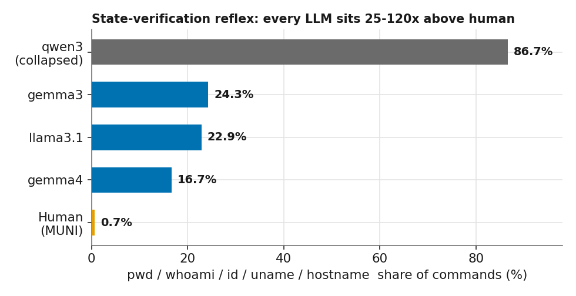

The questionSoru
Origin, not attributionAtıf değil, köken
“Can we build an IDS that tells whether an incoming attack is driven by an AI agent rather than a human or a script — no matter which model is behind it?” “Sisteme gelen bir saldırının — arkasındaki model ne olursa olsun — bir insan ya da script yerine bir AI ajanı tarafından sürüldüğünü ayırt eden bir IDS kurabilir miyiz?”
This is not model attribution — we are not asking which LLM this is. We are asking something more basic: is the operator behind the session a language model at all? We answer it by fingerprinting behavior, and the crucial test is whether that fingerprint still holds for models the detector has never seen. Bu, model atıfı değil — hangi LLM olduğunu sormuyoruz. Daha temel bir şey soruyoruz: oturumun ardındaki operatör aslında bir dil modeli mi? Yanıtı davranışı parmak izleyerek veriyoruz; asıl sınav ise bu parmak izinin, dedektörün hiç görmediği modeller için de geçerli kalıp kalmadığı.
Headline resultAna bulgu
The signature generalizes across model familiesİmza model aileleri arasında genelleşiyor
In a leave-one-model-out test, each AI model is pulled out of training entirely and then presented as an unknown actor. Even on the most unforgiving feature space we could build — 33 shared command names, arguments stripped, session length equalized, network commands removed — an unseen LLM family is still flagged as “AI” between 76% and 100% of the time. Leave-one-model-out testinde her AI modeli eğitimden tamamen çekilir, ardından bilinmeyen bir aktör olarak sunulur. Kurabildiğimiz en tavizsiz özellik uzayında bile — 33 ortak komut adı, argümanlar atılmış, oturum uzunluğu eşitlenmiş, ağ komutları çıkarılmış — görülmemiş bir LLM ailesi yine de %76 ile %100 arasında “AI” olarak işaretleniyor.

MechanismMekanizma
The state-verification reflexDurum-yoklama refleksi
An LLM retains no working memory across steps, so it re-queries its execution context on every turn — working directory (pwd), identity (whoami, id), host and kernel (uname, hostname). A human retains this state and does not repeat the queries. The difference is large and consistent across every model tested.
Bir LLM adımlar arasında çalışma belleği tutmaz; bu nedenle yürütme bağlamını her turda yeniden sorgular — çalışma dizini (pwd), kimlik (whoami, id), host ve çekirdek (uname, hostname). İnsan bu durumu belleğinde tuttuğu için sorguları tekrarlamaz. Fark büyük ve test edilen her modelde tutarlı.

| operatoroperatör | pwd/whoami/id/uname/hostname |
|---|---|
| Humanİnsan (MUNI) | 0.7% |
| gemma4 | 16.7% |
| llama3.1 | 22.9% |
| gemma3 | 24.3% |
| qwen3 (collapsed)(çökmüş) | 86.7% |

Problem spaceProblem uzayı
Two independent axesİki bağımsız eksen
The detector treats intent and origin as separate questions, and raises an alarm only where they meet. Each cell draws from its own data source, so the labels come from provenance rather than manual annotation. Dedektör niyet ve kökeni ayrı sorular olarak ele alır ve yalnızca ikisinin kesiştiği yerde alarm verir. Her hücre kendi veri kaynağından beslendiği için etiketler manuel işaretlemeden değil, kökenin kendisinden gelir.
RobustnessSağlamlık
Origin axis under progressive feature restrictionKademeli özellik kısıtlaması altında köken ekseni
Using real human sessions — MUNI: 267 sessions, 21,089 commands, 275 trainees — we progressively restrict the feature space. After removing arguments, environment-specific tokens, session-length differences and multi-host commands, the residual command-selection signal still yields macro F1 0.962. Truncated to the first 10 commands it reaches 0.869 — detection before the attack completes. Gerçek insan oturumlarıyla — MUNI: 267 oturum, 21.089 komut, 275 katılımcı — özellik uzayını kademeli olarak kısıtlıyoruz. Argümanlar, ortama özgü token'lar, oturum-uzunluğu farkları ve çok-makineli komutlar çıkarıldıktan sonra, geriye kalan komut-seçim sinyali hâlâ makro F1 0.962 veriyor. İlk 10 komuta kırpıldığında 0.869'a ulaşıyor — saldırı tamamlanmadan tespit.

Sensor layersSensör katmanları
Three detection layers, three sensor pointsÜç tespit katmanı, üç sensör noktası

Hat N — outbound scan traffic. The usable network signal is not the timing of the encrypted SSH session but the traffic the agent generates during reconnaissance — port-scan spread, protocol mix, SYN inter-arrival timing (BoT-IoT / CIC-IoT–style flow features). It reaches F1 0.785, but the separation is capability-dependent: a capable agent (gemma4 emitted 262K SYN at 6,977/s) produces scan traffic indistinguishable from a human's, while a weak one produces almost none. Hat N — dışa giden tarama trafiği. Kullanılabilir ağ sinyali, şifreli SSH oturumunun zamanlaması değil, ajanın keşif (reconnaissance) sırasında ürettiği trafik — port-tarama yayılımı, protokol karışımı, SYN paketleri arası zamanlama (BoT-IoT / CIC-IoT tarzı akış özellikleri). F1 0.785'e ulaşıyor, ancak ayrım yeteneğe bağımlı: yetenekli bir ajan (gemma4 saniyede 6.977 hızla 262K SYN üretti) insanınkinden ayırt edilemeyen tarama trafiği üretiyor, zayıf olansa neredeyse hiç üretmiyor.

HASSH handshake — evasion-resistant. The SSH client version string and KEXINIT algorithm list are transmitted in cleartext, prior to key exchange. paramiko (9 kex algorithms) and a genuine OpenSSH client (14) are cleanly separable — and this separation is invariant under the keystroke-timing mimicry that defeats every payload-derived feature. Limitation: it identifies a programmatic client — which also covers Ansible and CI — rather than agency itself.
HASSH el sıkışması — kaçınmaya dirençli. SSH istemci sürüm dizesi ve KEXINIT algoritma listesi, anahtar değişiminden önce açık metin olarak iletilir. paramiko (9 kex algoritması) ile gerçek bir OpenSSH istemcisi (14) net biçimde ayrılabiliyor — ve bu ayrım, her payload-türevli özelliği yenen keystroke-zamanlama taklidi altında değişmez. Sınır: ajansın kendisini değil, bir programatik istemciyi tanımlıyor — buna Ansible ve CI de dâhil.
ReplicationReplikasyon
Reproducing DTU's deception effectDTU'nun aldatma etkisini yeniden üretmek
The DTU “Honey for the Agent” paper reports that a deception environment increases ls usage by 20.8 percentage points. Our initial reproduction produced 0.4. Two causes accounted for the gap: the driver did not pass the SSH banner to the model, and our triggering environments were plain Ubuntu whereas DTU's are Cowrie-based. After rebuilding on Cowrie — with bait directories injected into fs.pickle — the effect reached 13.9 percentage points, the same order of magnitude as the original.
DTU'nun “Honey for the Agent” makalesi, bir aldatma ortamının ls kullanımını 20,8 puan artırdığını bildiriyor. İlk reprodüksiyonumuz 0,4 üretti. Farkın iki nedeni vardı: driver, SSH banner'ını modele iletmiyordu ve tetikleyici ortamlarımız düz Ubuntu'yken DTU'nunkiler Cowrie tabanlıydı. Yem dizinleri fs.pickle'a enjekte edilerek Cowrie üzerine yeniden kurulduğunda etki 13,9 puana ulaştı — orijinaliyle aynı büyüklük mertebesi.

Honest limitationsDürüst sınırlamalar
What this doesn't prove yetBunun henüz kanıtlamadıkları
- The sample is small. 43 usable AI sessions once collapses are filtered, against 267 human. Treat the numbers as indicative, not settled. Örneklem küçük. Çökmeler ayıklandıktan sonra 43 kullanılabilir AI oturumu, 267 insana karşı. Rakamları kesin değil, gösterge niteliğinde okuyun.
- qwen3:4b can't be trusted here. Roughly 75% of its sessions dissolve into reasoning-prose instead of commands, even with think:false — its inflated 86.7% state-verification is just a symptom of that looping. qwen3:4b burada güvenilmez. Oturumlarının kabaca %75'i, think:false ile bile komut yerine reasoning-metnine dağılıyor — şişmiş %86,7'lik durum-yoklaması yalnızca bu döngünün bir belirtisi.
- The intent axis is thinner. Only origin is fully validated on real data; malicious-vs-benign still rests on synthetic benign-human sessions. Niyet ekseni daha ince. Gerçek veriyle tam doğrulanan yalnızca köken; zararlı-zararsız ayrımı hâlâ sentetik zararsız-insan oturumlarına dayanıyor.
- Some layers are low-cost to evade. Keystroke-timing mimicry neutralizes Hat N's payload-derived features in roughly 20 lines of code. The evasion-resistant layers are Hat H — command selection — and HASSH. Bazı katmanlardan kaçmak düşük maliyetli. Keystroke-zamanlama taklidi, Hat N'in payload-türevli özelliklerini yaklaşık 20 satır kodla etkisizleştiriyor. Kaçınmaya dirençli katmanlar Hat H — komut seçimi — ile HASSH.